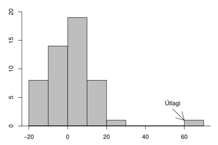

4. Lýsandi tölfræði¶
Eins og við sögðum í 2. kafla snýst tölfræði um að fá sem mestar upplýsingar út úr tölulegum gögnum. Ein góð aðferð til þess er að nota lýsistærðir sem eru tölur sem lýsa tilteknum eiginleikum mælinga. Við hefjum þennan kafla á almennri umfjöllun um lýsistærðir (kafli 4.1) og kynnum þar vísa til sögunnar, rithátt gerir okkur kleift að skrifa formúlur sem lýsa því hvernig lýsistærðir eru reiknaðar.
Við munum fjalla um fjölmargar lýsistærðir sem lýsa miðju (kafli 4.2) og breytileika (4.3) breyta. Þau hugtök munum við skýra nánar þegar að þeim kemur. Að því loknu tekur við umfjöllun um lýsistærðir sem lýsa samspili tveggja breyta. Fyrst ber að nefna fylgni (kafli 4.4 sem við notum til að lýsa sambandi tveggja samfelldra breyta. Þar á eftir koma lýsistærðir sem lýsa sambandi tveggja strjálla breyta. Fyrst fjöllum við um lýsistærðir sem lýsa sambandi tveggja hlutfalla (kafli 4.5) og að því loknu fjöllum við um fjórar lýsistærðir til að lýsa flokkunaraðferðum í kafla 4.6. Við ljúkum umfjöllunun okkar í kafla 4.7 með stuttri samantekt á hvenær er við hæfi að nota þær lýsistærðir sem við höfum fjallað um miðað við gerð og dreifingu breytanna sem þær lýsa.
4.1. Lýsistærðir¶
4.1.1. Lýsistærðir¶
4.1.1.1. Lýsistærð (statistic)¶
Athugið
Lýsistærð er tala sem verður reiknuð með einhverjum ákveðnum hætti út frá mælingunum okkar.
Dæmi um lýsistærðir eru lýsistærðin meðaleinkunn, reiknuð út frá öllum lokaeinkunnum. Hún gefur okkur upplýsingar um hversu vel nemandi hefur staðið sig í skóla. Annað dæmi um lýsistærð er heildar stigafjöldi, reiknuð út frá úrslitum leikja. Hana getum við notað til að meta hvernig lið hefur staðið sig á Íslandsmóti.
Eins og þið sjáið eru lýsistærðir hvarvetna í umhverfi okkar, enda gefa þær okkur miklar upplýsingar um gögnin á skýran og fljótlegan hátt. Til eru margar gerðir lýsistærða sem lýsa ólíkum eiginleikum mælinga. Algengustu lýsistærðirnar eru meðaltal og staðalfrávik en þið hafið sennilega heyrt um fleiri lýsistærðir eins og til dæmis stærsta gildi, tíðasta gildi og miðgildi.
Lýsistærðir geta bæði tekið saman mælingar á mörgum viðfangsefnum eða margar mælingar á sama viðfangsefni. Við getum til dæmis mælt púls hjá 20 hlaupurum og reiknað meðalpúls þeirra. Við getum líka mælt púlsinn hjá sama hlauparanum eftir 20 hlaup og reiknað meðalpúlsinn hjá þessum tiltekna hlaupara.
Hvort sem mælingarnar eru framkvæmdar oft á sama viðfangsefni eða á mörgum viðfangsefnum látum við \(n\) standa fyrir fjölda þeirra mælinga sem við erum að skoða, í litla dæminu að ofan er \(n=20\). Að sama skapi er hefð fyrir því að tákna mælingarnar með bókstafnum \(x\), en á bókstafinn hengjum við tölu sem kallast vísir sem segir til um númer hvað hver og ein tiltekin mæling er. Ef við vitum ekki í hvaða röð mælingarnar bárust ákveðum við af handahófi hvaða mæling er fyrsta mælingin og hver sú síðasta.
4.1.1.2. Vísir (index)¶
Athugið
Gerum ráð fyrir að við höfum \(n\) mælingar á tiltekinni breytu og köllum mælingarnar \(x_1, \ldots, x_n\). Tölurnar \(1, \ldots, n\), sem mælingarnar eru tölusettar eftir kallast vísar (e. indices) mælinganna.
Athugasemd
Þannig hefur fyrsta mælingin, \(x_1\), vísinn einn, mæling \(x_2\) hefur vísinn tvo og svo framvegis. Síðasta mælingin \(x_n\) hefur vísinn \(n\) en við getum líka talað um ótilgreind \(x_i\) þar sem það er ekki ákvarðað hvert gildið á vísinum \(i\) er. Þá stendur \(x_i\) fyrir hvaða mælingu sem er.
Segjum sem svo að við höfum þrjár mælingar á efri mörkum blóðþrýstings, 121 mmHg, 110 mHg og 132 mmHg. Þá væri \(x_1 = 121\) mmHg, \(x_2=110\) mmHg og \(x_3=132\) mmHg. Við getum líka látið vísana vísa til ákveðinna mælinga, þó að við vitum ekki hver númer þeirra eru. Þannig látum við \(x_{\text{min}}\) tákna minnstu mælinguna. Hún hefur vísinn ,,min“ sem stendur einfaldlega fyrir númer þeirrar mælingar með minnsta gildið. Að sama skapi notum við \(x_{\text{max}}\) til að tákna stærstu mælinguna, hvert svo sem númer hennar er.
Ef við höfum mælingar á fleiri en einni breytu, notum við mismunandi bókstafi til að lýsa mismunandi breytum. Þannig getum við til dæmis verið með mælingar \(x_1, \ldots x_{10}\) á breytunni \(X\) og mælingar \(y_1, \ldots, y_{14}\) á breytunni \(Y\). Ef mælingarnar á breytunum \(X\) og \(Y\) eru gerðar á sömu viðfangsefnunum, þá gætum við þess að mælingar á sömu viðfangsefnunum hljóti sama vísi. Þannig stæði \(x_5\) og \(y_5\) fyrir mælingar á breytunum \(X\) og \(Y\) fyrir viðfangsefni númer fimm.
4.2. Lýsistærðir fyrir miðju¶
4.2.1. Lýsistærðir fyrir miðju¶
Orðið miðja getur haft ólíka merkingu eftir því hverju það á að lýsa. Með miðju hrings eigum við t.d. við miðpunkt hringsins og miðja tímabils er sá tímapunktur sem er mitt á milli upphafs og loka tímabilsins. Hugtakið miðja er líka notað til að lýsa mælingum en ólíkt dæmunum hér á undan er um nokkrar ólíkar leiðir að velja til að reikna miðjuna út. Fyrst skulum við hugleiða nánar hvað við eigum við með miðju mælinga (e. central tendency).
4.2.1.1. Miðja mælinga (central tendency)¶
Athugið
Þegar við finnum miðju mælinga fyrir tiltekna breytu reiknum við út þá tölu sem er samtímis næst öllum mælingunum á breytunni okkar í einhverjum skilningi. Til þess eru nokkrar ólíkar aðferðir sem geta gefið ólíkar niðurstöður.
Oftast þyrpast flestar mælingarnar okkar í kringum miðjuna en verða stopulli eftir því sem lengra dregur frá henni. Því getur miðja verið mjög lýsandi fyrir mælingar. Það eru til nokkrar ólíkar aðferðir við að reikna miðju mælinga en munur þeirra liggur í því hvaða reglu við notum til að ákvarða hvaða tala er samtímis næst öllum mælingunum. Það er háð dreifingu mælinganna hver aðferðanna lýsir miðju mælinganna best. Sérhver þessara aðferða skilar einni tölu sem er reiknuð út frá mælingunum með ákveðnum hætti, það er, hún reiknar tiltekna lýsistærð. Athugið að oftar en ekki munu ólíkar lýsistærðir hljóta mismunandi útkomur. Í þessum hluta munum við fjalla um fimm mismunandi lýsistærðir sem allar lýsa miðju mælinga.
Miðja spannar (e. mid range)
Tíðasta gildi (e. mode)
Miðgildi (e. median)
Meðaltal (e. mean, arithmetic mean)
Vegið meðaltal (e. weighted mean)
Hér á eftir munum við fjalla nánar um þessar fimm gerðir lýsistærða fyrir miðju, hverju þær lýsa og hvenær er viðeigandi að nota þær.
4.2.2. Miðja spannar¶
Miðja spannar er meðaltal stærstu og minnstu mælinganna. Hún er gífurlega viðkvæm fyrir útlögum (breytist mikið eftir því hvort og hvaða útlagar eru í mælingunum) og því ekki mikið notuð í tölfræðiúrvinnslu. Hún getur þó verið gagnleg ef mælingarnar dreifast þétt um miðjuna. Eingöngu er hægt að lýsa talnabreytum með miðju spannar.
4.2.2.1. Miðja spannar (mid range)¶
Athugið
Gerum ráð fyrir því að við höfum \(n\) mælingar \(x_1, x_2, ... x_n\). Látum \(x_{\text{min}}\) tákna þá minnstu og \(x_{\text{max}}\) þá stærstu. Miðja spannar er reiknuð með
4.2.3. Tíðasta gildi¶
Tíðasta gildið er sú útkoma sem oftast kemur fyrir í mælingunum okkar. Það er sú eina af lýsistærðunum fyrir miðju sem er fjallað um í þessari bók sem er hægt er að nota til að lýsa óröðuðum flokkabreytum. Hins vegar er ekki við hæfi að reikna tíðasta gildið þegar mældar eru samfelldar talnabreytur.
4.2.3.1. Tíðasta gildi (mode)¶
Athugið
Gerum ráð fyrir því að við höfum \(n\) mælingar \(x_1, x_2, ... x_n\). Tíðasta gildið er sú útkoma sem oftast kemur fyrir í mælingunum okkar. Ef fleiri en ein tala koma jafn oft (og oftast) fyrir eru þær allar tíðustu gildin.
4.2.3.2. Sýnidæmi: Tíðasta gildi¶
Ábending
Við höfum eftirfarandi mælingar: 1, 2, 2, 3, 5, 9, 9, 15. Hvert er
tíðasta gildið?
Tíðustu gildin eru 2 og 9.
4.2.4. Miðgildi¶
Miðgildi er sú mæling sem er í miðju mælisafnsins ef þeim er raðað í stærðarröð. Helmingur mælinga í safninu eru minni en miðgildið og helmingur er stærri. Útlagar hafa lítil sem engin áhrif á miðgildi og einnig gefur það góða mynd af miðju mælinganna þó dreifing þeirra sé skekkt. Miðgildi er því mikið notað til að lýsa miðju mælinga. Miðgildi má nota til að lýsa öllum talnabreytum en einnig röðuðum flokkabreytum.
4.2.4.1. Miðgildi (median)¶
Athugið
Gerum ráð fyrir því að við höfum \(n\) mælingar \(x_1, x_2, ... x_n\). Byrjum á að raða þessum mælingum upp í stærðarröð, frá minnsta gildi upp í stærsta gildið. Reiknum svo
Miðgildi er oft táknað með \(M\). Það fer eftir því hvort \(n\) sé oddatala eða slétt tala hvernig við reiknum út miðgildið.
Ef \(n\) er oddatala þá er miðgildið staðsett í sæti \(0.5\cdot(n+1)\) í röðinni.
Ef \(n\) er slétt tala þá er miðgildið meðaltalið af þeim tveimur mælingum sem standa við sæti \(0.5\cdot(n+1)\) í röðinni.
VARÚÐ: \(0.5\cdot(n+1)\) er númerið á sætinu í röðinni, ekki miðgildið sjálft!
4.2.4.2. Sýnidæmi: Miðgildi - \(n\) er oddatala¶
Ábending
Við höfum eftirfarandi mælingar: 1, 2, 3, 5, 9, 9, 15. Finnið
miðgildið.
Mælingarnar eru í réttri röð, þ.e.a.s. frá lægsta gildi og upp í hæsta gildi. Við reiknum út sæti í röð með jöfnu 4.2.
og þá fæst að miðgildið stendur í sæti númer 4. Miðgildið er því, \(M\) = 5.
4.2.4.3. Sýnidæmi: Miðgildi - \(n\) er slétt tala¶
Ábending
Við höfum eftirfarandi mælingar: 1, 2, 3, 5, 9, 9, 15, 17. Finnið
miðgildið.
Mælingarnar eru í réttri röð, þ.e.a.s. frá lægsta gildi og upp í hæsta gildi. Við reiknum út sæti í röð með jöfnu 4.2.
miðgildið er því meðaltalið af tölunum sem standa í 4. og 5. sæti. Miðgildið er því, \(M\) = \(\frac{5+9}{2}\) = 7.
4.2.5. Meðaltal¶
Meðaltal er án vafa algengasta lýsistærðin fyrir miðju mælinga. Þó er það viðkvæmt fyrir útlögum og einnig gefur það ekki rétta mynd af miðju mælinganna ef dreifing þeirra er skekkt. Meðaltal er eingöngu hægt að reikna fyrir talnabreytur.
4.2.5.1. Meðaltal (mean, arithmetic mean)¶
Athugið
Gerum ráð fyrir því að við höfum \(n\) mælingar \(x_1, x_2, ... x_n\). Meðaltalið fæst með því að leggja mælingarnar saman og deila í með fjölda mælinga.
Athugasemd
Táknið \(\sum\) kallast summutákn og er notað til að lýsa summu talna. Sem dæmi má nefna er \(\sum_{i=1}^{3} x_i\) það sama og \(x_1 + x_2 + x_3\). Stærðin \(\sum_{i=1}^{n} x_i\) táknar summu allra mælinga \(x_i\) með ótilgreindan vísi \(i\), sem tekur fyrst gildið 1 þá 2 og svo öll heiltölugildi upp í \(n\). Það er, \(\sum_{i=1}^{n} x_i\) er það sama og \(x_1 + x_2 + \cdots + x_n\).
4.2.5.2. Sýnidæmi: Summutákn og vísar¶
Ábending
Finnið \(\sum_{i=4}^{7} x_i\).
\(\sum_{i=4}^{7} x_i = x_4 + x_5 + x_6 + x_7\).
4.2.6. Vegið meðaltal¶
Þegar meðaltal er reiknað eins og hér að ofan, með jöfnu 4.3, fá allar mælingarnar sama vægi. Í sumum tilfellum viljum við gefa mælingunum misjafnt vægi, þá er talað um vegið meðaltal. Vegið meðaltal er eingöngu reiknað fyrir talnabreytur.
4.2.6.1. Vegið meðaltal (weighted mean)¶
Athugið
Gerum ráð fyrir því að við höfum \(n\) mælingar \(x_1, x_2, ... x_n\) og vægi þeirra \(w_1, w_2, ... w_n\). Vegið meðaltal er reiknað sem
4.2.6.2. Sýnidæmi: Vegið meðaltal¶
Ábending
Gunnar landfræðinemi hefur lokið eftirfarandi námskeiðum og hlotið einkunnirnar sem sjá má hér að neðan. Einnig er tekið fram hversu margar einingar námskeiðin eru.
Námskeið |
Einkunn |
Einingafjöldi |
|---|---|---|
Náttúrulandfræði |
7 |
8 |
Kortagerð |
9 |
8 |
Mannvistarlandfræði |
7 |
8 |
Vinnulag í landfræði og ferðamálafræði |
8 |
6 |
Eðlisfræði G |
6 |
8 |
Jarðfræði 2A |
9 |
8 |
Fólksfjöldabreytingar |
9 |
6 |
Tölfræði |
10 |
8 |
Hver er meðaleinkunn Gunnars landfræðinema ef tekið er tillit til mismunandi einingafjölda námskeiðanna, þ.e.a.s. hver er vegin meðaleinkunn Gunnars landfræðinema?
Til að reikna út vegið meðaltal einkunnanna notum við jöfnu 4.4. \(x\)-in í jöfnunni eru einkunnirnar og \(w\)-in vægin (við viljum gefa einkunnunum misjafnt vægi eftir því hversu margar einingar námskeiðin eru). Við setjum inn í jöfnuna og fáum
4.2.7. Samanburður á meðaltali og miðgildi¶
Meðaltal og miðgildi eru þær lýsistærðir sem oftast eru notaðar til að lýsa miðju gagna. Það er gagnlegt að skoða gögnin myndrænt og reyna að átta sig á dreifingu gagnanna (sjá kafla 3.2.2) áður en ákvörðun er tekin um hvaða lýsistærð lýsir miðju gagnanna best. Sé dreifingin skekkt, tvíkryppu- eða fjölkryppudreifing er meðaltal ekki góður mælikvarði á miðju. Í þessum tilvikum er miðgildið betri kostur. Sé dreifingin nálægt því að vera samhverf eru meðaltalið og miðgildið svipuð og jöfn ef dreifingin er alveg samhverf.
4.2.7.1. Samanburður á meðaltali og miðgildi¶
Athugið
Ef dreifingin er skekkt til hægri er meðaltalið hærra en miðgildið.
Ef dreifingin er samhverf er meðaltalið og miðgildið það sama.
Ef dreifingin er skekkt til vinstri er meðaltalið lægra en miðgildið.
Þetta má sjá á mynd 4.1
Mynd 4.1: Samanburður á meðaltali og miðgildi¶
Útlagar geta haft mikil áhrif á meðaltal. Hins vegar hafa þeir ekki mikil áhrif á miðgildi og því er miðgildi betri mælikvarði á miðju gagna ef útlagar eru í gagnasafninu. Hér að neðan má sjá stuðlarit af gagnasafni sem inniheldur útlaga. Við hlið stuðlaritsins hefur meðaltal og miðgildi safnsins verið reiknað með og án útlagans. Sjá má að meðaltalið stækkar um 1.35 á meðan miðgildið stækkar eingöngu um 0.03.
|  | \(\begin{array}{c}\text{Meðaltal með útlaga} = 2.77\\ \text{Meðaltal án útlaga} = 1.42\\ \text{Miðgildi með útlaga} = 1.79\\ \text{Miðgildi án útlaga} = 1.76 \end{array}\) |
{kind=link}
4.3. Lýsistærðir fyrir breytileika¶
4.3.1. Lýsistærðir fyrir breytileika¶
Þið hafið nú séð nokkrar ólíkar aðferðir til að finna miðju mælinga. Valið á hverri þeirra við beitum veltur á dreifingu gagnanna. Annar áhugaverður og oft og tíðum ekki síður mikilvægur eiginleiki sem við viljum kanna er breytileiki gagnanna en breytileiki er sá eiginleiki sem hvað mest er notaður til að meta breytileika mælinganna sem við erum að skoða.
4.3.1.1. Breytileiki mælinga (spread)¶
Athugið
Breytileiki mælinga er aðferð sem lýsir því hversu nálægt miðju sinni mælingarnar liggja.
Það eru til margar aðferðir til að lýsa breytileika mælinga sem henta mælingum misvel, líkt og aðferðirnar sem lýsa miðju mælinga. Þar sem breytileiki lýsir því hversu nálægt miðjunni mælingarnar liggja er val á lýsistærð fyrir breytileika háð því hvaða lýsistærð er notuð fyrir miðju mælinganna. Til dæmis er ekki við hæfi að nota lýsistærð sem lýsir fjarlægð mælinga frá meðaltali ef miðgildi var notað til lýsa miðju þeirra. Þær lýsistærðir sem við munum fjalla um eru
Spönn/dreifisvið (e. range)
Fjórðungamörk (e. quartiles)
Fimm tölu samantekt (e. five number summary)
Fjórðungaspönn (e. interquartile range)
Prósentumörk (e. percentiles)
Dreifni/fervik (e. variance)
Staðalfrávik (e. standard deviation)
Frávikshlutfall (e. coefficient of variation)
4.3.2. Spönn¶
Spönn er mismunur stærstu og minnstu mælingarinnar. Hún er því mjög viðkvæm fyrir útlögum og þar að auki er hún eingöngu reiknuð út frá tveimur af mælingunum okkar. Gildi allra hinna mælingana skipta engu! Spönn verður því að teljast heldur rýr mælikvarði á breytileika mælinga, líkt og miðja spannar getur verið ófýsilegur mælikvarði á miðju mælinga. Hins vegar er spönn auðskiljanleg flestu fólki sama hve litla tölfræðiþekkingu það hefur og þannig má nota hana til að gefa breiðum hópi fólks mynd af dreifingu mælinga með fljótlegum hætti. Af þeim sökum er spönn afar mikið notuð í fjölmiðlum, eins og að tveimur tímum hafi munað á fyrsta og síðasta keppanda í langhlaupi. Spönn má reikna fyrir allar talnabreytur en einnig raðaðar flokkabreytur.
4.3.2.1. Spönn (range)¶
Athugið
Gerum ráð fyrir að við höfum \(n\) mælingar \(x_1, x_2, ... x_n\) og látum \(x_{\text{min}}\) tákna þá minnstu og \(x_{\text{max}}\) þá stærstu. Spönn gagnanna er reiknuð með
4.3.3. Fjórðungamörk¶
Sé miðgildi notað til að lýsa miðju mælinga er yfirleitt við hæfi að nota fjórðungamörk til að lýsa breytileika þeira. Fjórðungamörkin eru þrjú og er algengt að kalla þau, \(Q_1, Q_2\) og \(Q_3\). Í sumum kennslubókum og ritum eru fjórðungamörkin kölluð \(Q_{25\%}, Q_{50\%}\) og \(Q_{75\%}\). Við munum halda okkur við fyrri ritháttinn í þessari bók.
\(Q_1\): Um fyrsta fjórðungamarkið gildir að 25% af mælingunum eru lægri en \(Q_1\).\(Q_1\) er því miðgildi neðri helmings mælinganna, að undanskildu miðgildinu.\(Q_2\): Um annað fjórðungamarkið gildir að 50% af mælingunum eru lægri en \(Q_2\).\(Q_2\) er því miðgildið , \(Q_2 = M\).\(Q_3\): Um þriðja fjórðungamarkið gildir að 75% af mælingunum eru lægri en \(Q_3\).\(Q_3\) er því miðgildi efri helmings mælinganna, að undanskildu miðgildinu.
Til eru nokkrar aðferðir við að reikna fjórðungamörk en við munum halda okkur við eftirfarandi aðferð þegar við reiknum fjórðungamörkin í höndunum. Tölfræðihugbúnaðir nota oft aðeins flóknari aðferðir en niðurstöðurnar eru yfirleitt mjög svipaðar. Fjórðungamörk má reikna fyrir allar talnabreytur sem og raðaðar flokkabreytur.
4.3.3.1. Fjórðungamörk (quartiles)¶
Athugið
Gerum ráð fyrir að við höfum \(n\) mælingar \(x_1, x_2, ... x_n\). Byrjum á að raða mælingum upp í stærðarröð, frá lægsta gildinu upp í hæsta gildið. Reiknum svo
\(Q_1\) er mælingin sem stendur í sæti \(0.25\cdot(n+1)\) eða meðaltalið af þeim tveimur mælingum sem standa við sæti \(0.25 \cdot (n+1)\) í röðinni.
\(Q_2\) er mælingin sem stendur í sæti \(0.50\cdot(n+1)\) eða meðaltalið af þeim tveimur mælingum sem standa við sæti \(0.50 \cdot (n+1)\) í röðinni.
\(Q_3\) er mælingin sem stendur í sæti \(0.75\cdot(n+1)\) eða meðaltalið af þeim tveimur mælingum sem standa við sæti \(0.75 \cdot (n+1)\) í röðinni.
4.3.3.2. Sýnidæmi: Fjórðungamörk¶
Ábending
Við höfum eftirfarandi mælingar: 1, 2, 3, 5, 9, 9, 15, 17. Finnið
fjórðungamörk mælinganna.
Mælingarnar eru í réttri röð, þ.e.a.s. frá lægsta gildi og upp í hæsta gildi. Við byrjum því á að reikna í hvaða sæti gildin sem við þurfum til að reikna fjórðungamörkin sitja í. Til þess notum við jöfnu 4.6:
Þá fæst að \(Q_1\) er meðaltal gildanna sem standa í sætum 2 og 3. Tölurnar sem standa í sætum 2 og 3 eru 2 og 3 og við fáum
\(Q_2\) er meðaltal gildanna sem standa í sætum 4 og 5. Tölurnar sem standa í sætum 4 og 5 eru 5 og 9 og við fáum
\(Q_3\) er meðaltal gildanna sem standa í sætum 6 og 7. Tölurnar sem standa í sætum 6 og 7 eru 9 og 15 og við fáum
4.3.4. Fimm tölu samantekt¶
Fimm tölu samantekt er afar hnitmiðuð og fljótleg leið til að gefa miklar upplýsingar um bæði miðju og breytileika gagnanna. Fyrir vikið er hún mikið notuð.
4.3.4.1. Fimm tölu samantekt (five-number summary)¶
Athugið
Fimm-tölu samantekt samanstendur af minnsta gildi (e. min), fjórðungamörkunum og stærsta gildi (e. max), þ.e.a.s.
4.3.4.2. Sýnidæmi: Fimm tölu samantekt¶
Ábending
Höfum eftirfarandi mælingar: 1, 2, 3, 5, 9, 9, 15, 17. Við fundum
fjórðungamörkin í dæmi 4.3.3.2 og er þau:
\(Q_1 = 2.5\), \(Q_2 = 7\) og \(Q_3 = 12\).
Fimm-tölu samantekt gagnasafnsins er því:
4.3.5. Fjórðungaspönn¶
Fjórðungaspönn er reiknuð út frá fjórðungamörkunum, nánar til tekið mismunur fyrsta og þriðja fjórðungamarksins. Líkt og fjórðungamörkin ætti því að nota hana þegar miðgildi en ekki meðaltal er notað til að lýsa miðju mælinganna. Ólíkt spönn er fjórðungaspönn ekki viðkvæm fyrir útlögum og því mun áreiðanlegri mælikvarði á breytileika mælinga. Fjórðungaspönn er eingöngu við hæfi að reikna fyrir talnabreytur en ekki raðar flokkabreytur.
4.3.5.1. Fjórðungaspönn (interquartile range)¶
Athugið
Gerum ráð fyrir að við höfum \(n\) mælingar \(x_1, x_2, ... x_n\) og látum \(Q_1\) tákna fyrsta fjórðungamark og \(Q_3\) þriðja fjórðungamark. Fjórðungaspönn gagnanna er táknuð með \(IQR\) og reiknuð með
4.3.6. Prósentumörk¶
Hugmyndin að baki prósentumörkum (e. percentiles) er svipuð og sú að baki fjórðungamörkum nema í stað þess að skoða eingöngu mörkin við 25% eða 75% mælinganna getum við leyft hvaða hlutfall sem er.
4.3.6.1. Prósentumörk (percentile)¶
Athugið
Með \(a\%\) prósentumörkum er átt við þá tölu sem er þannig að \(a\%\) mælinganna hafa lægra gildi en sú tala.
Með 10% prósentumörkum er þá átt við þá tölu sem er þannig að 10% mælinganna hafa lægra gildi en sú tala. Sé til dæmis 10% prósentumarkið talan 8 þá eru 10% mælinganna lægri en 8. Líkt og með fjórðungamörkin eru nokkrar ólíkar leiðir til þess að reikna prósentumörk og er það nær aldrei gert ,,í höndunum“ heldur er notast við tölfræðihugbúnað. Prósentumörk má reikna fyrir talnabreytur sem og raðaðar flokkabreytur.
4.3.7. Dreifni¶
Dreifni lýsir fjarlægð mælinga frá meðaltali þeirra. Því er eingöngu við hæfi að nota dreifni sem mælikvarða á breytileika þegar meðaltal hefur verið notað til að lýsa miðju mælinganna. Þar af leiðandi er eingöngu hægt að reikna dreifni fyrir talnabreytur.
4.3.7.1. Dreifni (variance)¶
Athugið
Gerum ráð fyrir að við höfum \(n\) mælingar \(x_1, x_2, ... x_n\). Dreifni mælinga er táknuð \(s^2\) og er reiknuð með
\(s^2\) = 0 þá og því aðeins að allar mælingarnar séu jafnar, annars er \(s^2\) ávallt stærra en 0. Því lengra sem mælingarnar liggja frá meðaltalinu því hærra verður \(s^2\).
Athugasemd
Til að reikna dreifni þurfum við að:
Reikna meðaltal mælinganna
Draga meðaltalið frá sérhverri mælingu
Hefja allar útkomurnar úr lið 2 í annað veldi
Leggja saman allar útkomurnar í lið 3
Deila útkomunni í lið 4 með \(n\)-1.
4.3.7.2. Sýnidæmi: Dreifni¶
Ábending
Höfum eftirfarandi mælingar: 2, 2, 3, 5, 8. Finnið dreifni
mælisafnsins.
Við byrjum á að finna meðaltalið og notum til þess jöfnu 4.3
Gerum nú litla töflu. Fyrsti dálkurinn í töflunni inniheldur gögnin. Í dálki tvö er meðaltal gagnasafnsins dregið frá mælingunum línu fyrir línu. Í þriðja dálknum er talan í dálki númer tvö hafin í annað veldi og í síðustu línu dálksins eru allar tölur dálksins lagðar saman. Þetta er talan í teljaranum í jöfnu 4.8.
\(x_i\) |
\(x_i - \bar{x}\) |
\((x_i - \bar{x})^2\) |
|---|---|---|
2 |
2-4 = -2 |
4 |
2 |
2-4 = -2 |
4 |
3 |
3-4 = -1 |
1 |
5 |
5-4 = 1 |
1 |
8 |
8-4 = 4 |
16 |
Til að reikna dreifnina þurfum við að lokum að deila með \((n-1)\) samkvæmt jöfnu 4.8.
4.3.8. Staðalfrávik¶
Staðalfrávik mælinga er einfaldlega kvaðratrótin af dreifni þeirra. Því ætti, líkt og með dreifnina, eingöngu að nota staðalfrávik þegar meðaltal er notað til að lýsa miðju gagna. Því má eingöngu reikna staðalfrávik fyrir talnabreytur. Staðalfrávik er sennilega mest notaða lýsistærðin fyrir breytileika mælinga og því mikilvægt að ná góðum tökum og skilningi á meðferð hennar.
4.3.8.1. Staðalfrávik (standard deviation)¶
Athugið
Gerum ráð fyrir að við höfum \(n\) mælingar \(x_1, x_2, ... x_n\). Staðalfrávik mælinga er táknað með \(s\) og er reiknað með
\(s\) = 0 þá og því aðeins að allar mælingarnar eru jafnar, annars er \(s\) ávallt stærra en 0. Því lengra sem mælingarnar liggja frá meðaltalinu því hærra verður \(s\).
Athugasemd
Til að reikna staðalfrávik þurfum við að:
Reikna dreifnina með því að nota jöfnu 4.8
Taka kvaðratrót af dreifninni
4.3.8.2. Sýnidæmi: Staðalfrávik¶
Ábending
Höfum eftirfarandi mælingar: 2, 2, 3, 5, 8. Finnið staðalfrávik
mælisafnsins.
Við þurfum að byrja á að finna dreifni mælisafnsins en þar sem þetta eru sömu tölur og í dæmi 4.3.7.2 höfum við nú þegar reiknað hana, \(s^2 = 6.5\). Staðalfrávikið finnum við nú með því að taka kvaðratrót af dreifninni skv. jöfnu 4.9.
4.3.9. Frávikshlutfall¶
Það er oft erfitt að bera saman staðalfrávik gagna þegar mælingarnar eru í misjöfnum mælieiningum eða meðaltal þeirra er mjög frábrugðið. Í þeim tilvikum reiknum við frávikshlutfall til að bera saman breytileika tveggja eða fleiri hópa. Það er táknað með \(CV\).
4.3.9.1. Frávikshlutfall (coefficient of variation)¶
Athugið
Frávikshlutfall reiknum við með
Eftir því sem \(CV\) er hærra því breytilegri eru gögnin.
4.3.10. Samanburður á lýsistærðum fyrir breytileika¶
Dreifni og staðalfrávik eru notuð til að lýsa breytileika mælinganna umhverfis meðaltalið og á aðeins að nota þegar meðaltal er notað sem mælikvarði á miðju. Staðalfrávik er yfirleitt notað fram yfir dreifni þar sem mælieiningin á staðalfrávikinu er sú sama og á mælingunum (hugsið ykkur að ef mælingarnar okkar eru í metrum, \(m\), þá er staðalfrávikið í einingunni \(m\) en dreifnin í \(m^2\)). Staðalfrávik er viðkvæmt fyrir skekkingu og útlögum. Aðeins fáir útlagar geta gert staðalfrávikið mjög hátt. Séu mælingarnar skekktar eða ef útlagar eru til staðar er fimm tölu samantekt besti mælikvarðinn á breytileika gagnanna.
4.4. Fylgnistuðull¶
Við höfum nú séð fjölmargar leiðir til að lýsa miðju og breytileika einstakra samfelldra talnabreyta. Nú er komið að því að skoða fleira en eina breytu í einu. Fylgnistuðull úrtaks eða einfaldlega fylgni er lýsistærð sem lýsir sambandi tveggja samfelldra talnabreyta. Fylgnistuðul getum við eingöngu notað til að lýsa línulegu sambandi (kassi 4.4.1.2). Til að átta okkur á því skulum við fyrst rifja upp jöfnu beinnar línu.
4.4.1. Jafna beinnar línu¶
4.4.1.1. Jafna beinnar línu (straight line equation)¶
Athugið
Jafna beinnar línu lýsir línulegu sambandi tveggja breyta, \(y\) og \(x\). Jöfnuna má skrifa sem
þar sem \(\beta_0\) er skurðpunktur (e. intercept) línunnar við y-ás og \(\beta_1\) er hallatala (e. slope) línunnar.
Athugasemd
\(\beta_0\) er því jafnt gildinu á \(y\) þegar gildið á \(x\) er jafnt og núll og \(\beta_1\) segir okkur hversu mikið \(y\) breytist við einnar einingar breytingu á \(x\).
Reikna má út hallatöluna með því að velja sér tvo punkta á línunni, \((x_1,y_1)\) og (\(x_2,y_2\)) og reikna
Á mynd 4.2 má sjá beina línu og hvernig lesa má úr gildi skurðpunkts og hallatölu línunnar.
Mynd 4.2: Jafna beinnar línu¶
4.4.1.2. Línulegt samband¶
Athugið
Við segjum að samband tveggja breyta sé línulegt (e. linear) ef nota má jöfnu beinnar línu til spá fyrir um gildi annarrar breytunnar breytunnar út frá gildi hinnar. Breytan á \(x\)-ás kallast óháða breytan en breytan á \(y\)- ás kallast háða breytan.
4.4.2. Fylgnistuðull úrtaks¶
4.4.2.1. Fylgnistuðull úrtaks (sample coefficient of correlation)¶
Athugið
Gerum ráð fyrir að við höfum \(n\) mælingar á tveimur breytum \(x\) og \(y\). Táknum meðaltal og staðalfrávik \(x\) breytunnar með \(\bar{x}\) og \(s_{x}\) og meðaltal og staðalfrávik \(y\) breytunnar með \(\bar{y}\) og \(s_{y}\). Fylgnistuðul úrtaksins reiknum við með
Fylgnistuðullinn \(r\) er alltaf á bilinu -1 til 1. Sé hann nálægt núlli segjum við að það sé lítil fylgni milli breytanna en sé hann nálægt 1 eða -1 segjum við að það sé mikil fylgni milli þeirra.
Mikilvægt er að muna að fylgni og fylgnistuðull eru aðeins mælikvarðar á línulegt samband. Það getur verið skýrt samband á milli tveggja breyta þó það sé ekki endilega línulegt. Skoðum nú aftur mynd 4.3. Eðlilegt væri að nota \(r\) til að mæla samband breytanna á efri myndunum tveimur þar sem um er að ræða línulegt samband (jákvætt til vinstri en neikvætt til hægri) en ekki á myndunum fyrir neðan þar sem sambandið er ólínulegt.
Mynd 4.3: Punktarit þar sem samband breyta er línulegt (að ofan) og ólínulegt (að neðan)¶
4.4.3. Stefna og styrkleiki línulegs sambands¶
4.4.3.1. Stefna línulegs sambands¶
Athugið
Formerki fylgnistuðulsins segir til um það hver stefna línulegs sambands er. Hún er annað hvort jákvæð eða neikvæð. Ef fylgnistuðull tveggja breyta er jákvæður segjum við að fylgni þeirra sé jákvæð. Ef fylgnistuðull tveggja breyta er neikvæður segjum við að fylgni þeirra sé neikvæð.
Þegar fylgni er jákvæð stækka gildi háðu breytunnar þegar gildi óháðu breytunnar stækka. Þegar fylgni er neikvæð minnka gildi háðu breytunnar þegar gildi óháðu breytunnar stækka.
4.4.3.2. Styrkleiki línulegs sambands¶
Athugið
Algildi (e. absolute value) fylgnistuðuls lýsir styrkleika línulega sambandsins sem gildir milli breytanna. Hann segir okkur hversu vel við getum ákvarðað gildi svarbreytunnar út frá gildi skýribreytunnar.
Gætið ykkar á því að styrkleiki línulegs sambands segir ekkert til um það hversu mikið háða breytan stækkar eða minnkar eftir því sem óháða breytan stækkar heldur eingöngu hversu gott sambandið er. Ef \(r = 0\) er ekkert línulegt samband á milli breytanna. Ef \(r=-1\) eða \(r=1\) vitum við nákvæmlega hvert gildi háðu breytunnar verður ef við þekkjum gildi óháðu breytunnar. Þegar \(r=-1\) segjum við að fullkomið neikvætt samband gildi milli breytanna en ef \(r=1\) segjum við að sambandið sé fullkomið jákvætt. Því lengra sem \(r\) liggur frá 0 (í báðar áttir) því sterkari er fylgnin, það er þeim betur getum við spáð fyrir um gildi háðu breytunnar út frá gildi óháðu breytunnar. Á mynd 4.4 má sjá nokkur punktarit þar sem stefna og styrkleiki fylgni breytanna er mismunandi.
Mynd 4.4: Punktarit fyrir mismunandi gildi á \(r\)¶
Orsakasamband (e. causation) er til staðar þegar breyting á einni breytu veldur breytingu í annarri breytunni eins og rætt var um í kafla 2.6. Oft má finna sterka fylgni á milli breyta þó svo að orsakasamband sé ekki til staðar. Í mörgum tilfellum eru breyturnar þá undir áhrifum þriðju breytunnar sem þá er kölluð dulin breyta (e. lurking variable). Sem dæmi má nefna að fylgni má finna á milli fjölda seldra ísa og fjölda seldra fellihýsa. Það er nokkuð ljóst að það að margir ísar séu seldir veldur ekki að mörg fellihýsi seljist (eða öfugt). Hér er ekki um orsakasamband að ræða heldur eru báðar breyturnar háðar þriðju breytunni, hitastigi sem er dulin breyta. Því dugar há fylgni aldrei ein og sér til að fullyrða að orsakasamband sé á milli tveggja breyta. Varist að draga ályktanir um orsakasamband á þeirri forsendu að fylgni sé milli breytanna.
4.5. Lýsistærðir fyrir samband hlutfalla¶
Nú höfum við séð hvernig fylgni lýsir sambandi tveggja samfelldra talnabreyta. Þegar um samband tveggja strjálla breyta er að ræða hins vegar af mörgum lýsistærðum að taka. Sú fyrsta sem við kynnumst er áhættuhlutfall.
4.5.1. Áhættuhlutfall¶
Áhættuhlutfall (e. relative risk) er mikið notað þegar borin eru saman hlutföll í tveimur þýðum. Þá hefur annað þýðið yfirleitt tiltekinn eiginleika sem verið er að athuga en hitt þýðið er viðmiðunarþýði af einhverri gerð. Dæmi um slíkt er að bera saman algengi lungnakrabbameins hjá reykingafólki og þeim sem ekki reykja. Hér er ,,áhugaverði“ eiginleikinn reykingar en breytan sem er mæld er segir hvort viðkomandi sé með lungnakrabbamein eða ekki. Áhættuhlutfall er sér í lagi mikið notað þegar annað þýðið hlýtur eitthvert ákveðið inngrip en hitt þýðið hlýtur lyfleysumeðferð (sjá kassa 2.5.1.3).
4.5.1.1. Áhættuhlutfall (relative risk)¶
Athugið
Áhættuhlutfall, táknað RR, er hlutfall breytu í þýðinu með eiginleikann sem verið er að athuga, táknað \(p_1\), deilt með hlutfalli sömu breytu í viðmiðunarþýðinu, táknað \(p_2\).
Með því að skoða áhættuhlutfall erum við því að leiðrétta fyrir lyfleysuáhrifum eða öðrum utanaðkomandi áhrifum sem eru til staðar hjá bæði viðmiðunarþýðinu og þýðinu með eiginleikann sem við höfum áhuga á.
4.5.1.2. Túlkun áhættuhlutfalls¶
Athugið
Sé RR = 1 er hlutfallið það sama í þýðunum tveimur.
Sé RR <1 er hlutfallið minna hjá þýðinu með áhugaverða eiginleikann en í viðmiðunarþýðinu.
Sé RR >1 er hlutfallið meira hjá þýðinu með áhugaverða eiginleikann en í viðmiðunarþýðinu.
Gögn af þessu tagi eru oft sett upp í 2x2 töflur líkt og töflu 4.1. Þar sem við erum að skoða hlutföll tölum við til einföldunar um að mælingarnar sé ,,með“ eða ,,án“ breytunnar sem verið er að skoða. Ef við táknum fjölda mælinga með breytuna í áhugaverða þýðinu með \(a\), fjölda mælinga án hennar í sama þýði \(b\), fjölda mælinga með breytuna í viðmiðunarþýðinu \(c\) og fjölda mælinga án hennar með \(d\) þá verður áhættuhlutfallið einfaldlega talan \(\frac{a}{a+b}/\frac{c}{c+d}\).
Áhugavert þýði |
Viðmiðunarþýði |
|
|---|---|---|
a |
c |
|
b |
d |
|
Alls |
a+b |
c+d |
4.5.1.3. Sýnidæmi: Áhættuhlutfall¶
Ábending
Birna Margrét kannar hvort höfuðverkir séu algengari meðal skokkara en annarra. Hún velur 80 skokkara, skráða í hlaupahópa í Reykjavík, af handahófi. Meðal þeirra reynast 8 sem fá höfuðverki á tveggja vikna fresti eða oftar. Til viðmiðunar valdi hún 80 einstaklinga úr þjóðskrá af svipuðu aldursbili og spurði þá um tíðni höfuðverkja. Af þeim reyndust 16 fá höfuðverki á tveggja vikna fresti eða oftar. Hvert er áhættuhlutfall þess að fá höfuðverki eftir því hvort fólk skokkar reglulega eða ekki?
Skokkarar |
Aðrir |
|
|---|---|---|
Fá tíða höfuðverki |
8 |
16 |
Fá ekki tíða höfuðverki |
72 |
64 |
Alls |
80 |
80 |
Áhættuhlutfallið er
Skokkar eru því 50% ólíklegri til að þjást af tíðum höfuðverkjum heldur en þeir sem ekki skokka.
4.5.2. Gagnlíkindahlutfall¶
Gagnlíkindahlutfall (e. odds ratio) er notað við sömu aðstæður og áhættuhlutfall. Það hefur hins vegar þann kost fram yfir áhættuhlutföllin að gera minni kröfur um tilraunahögun þegar gögnunum er safnað. Þegar við notum áhættuhlutföll erum við að túlka líkur þess að einstaklingar í einu þýði hljóti tiltekna breytu gagnvart líkum einstaklinga í öðru þýði á að hljóta breytuna. Til að meta þær líkur þurfum við að velja einstaklinga af handahófi úr hvoru þýði fyrir sig. Slíkt getur verið afar óhentugt þegar fjöldi viðfangsefna sem hljóta breytuna ef mjög lágt. Sem dæmi má nefna ef breytan sem við erum að kanna er hvort viðkomandi hafi heilaæxli eða ekki. Þar sem heilaæxli eru afar fátíð gætum við þurft að hafa gífulega stór úrtök til að meta líkurnar með góðum hætti.
Gagnlíkindahlutföll leyfa okkur hins vegar að snúa úrtakshöguninni ,,á hvolf“. Þegar við reiknum gagnlíkindahlutföll erum við ekki að meta líkur og vegna þess hvernig þau eru reiknuð getum við leyft okkur að velja einstaklinga af handahófi eftir því hvaða gildi breytunnar þeir hljóta (en ekki hvoru þýðinu þeir tilheyra). Við gætum sem dæmi valið 20 einstaklinga með heilaæxli og 20 einstaklinga ekki með heilaæxli og kannað hvoru þýðinu þeir tilheyra. Enn fremur gildir að ef líkurnar á að hljóta breytuna eru litlar verða áhættuhlutföll og gagnlíkindahlutföll svipuð svo gagnlíkindahlutföll geta hjálpað okkur að meta áhættuhlutfallið í þeim tilvikum.
4.5.2.1. Gagnlíkindi (odds)¶
Athugið
Ef líkurnar á að tiltekinn atburður eigi sér stað eru \(p\), þá eru gagnlíkindi atburðarins, táknaðar með \(o\) reiknaðar með jöfnunni
Gagnlíkindahlutfall er hlutfall tveggja gagnlíkinda. Í stuttu máli má segja að gagnlíkindi (e. odds) séu líkurnar á því að tiltekinn atburður eigi sér stað deildar með líkunum á því að hann gerist ekki.
4.5.2.2. Gagnlíkindahlutfall (odds ratio)¶
Athugið
Gagnlíkindahlutfall, táknað OR, eru gagnlíkindi breytu í þýðinu með eiginleikann sem verið er að athuga, táknað \(o_1\), deildar með gagnlíkindum sömu breytu í viðmiðunarþýðinu, táknaðar \(o_2\).
Séu niðurstöðurnar settar fram eins og í töflu 16.1 verður gagnlíkindahlutfallið \(\frac{a}{b} / \frac{c}{d} = ad/bc\). Líkt og þegar við skoðum áhættuhlutfall höfum við mestan áhuga á því að kanna hvort gagnlíkindahlutfallið sé stærra eða minna en einn, því það segir til um hvort þýðið hefur meiri gagnlíkindi á að ,,hljóta“ breytuna eða ekki.
4.5.2.3. Túlkun gagnlíkindahlutfalls¶
Athugið
Sé OR = 1 eru gagnlíkindin þær sömu í þýðunum tveimur.
Sé OR <1 eru gagnlíkindin minni hjá þýðinu með áhugaverða eiginleikann en í viðmiðunarþýðinu.
Sé OR >1 eru gagnlíkindin meiri hjá þýðinu með áhugaverða eiginleikann en í viðmiðunarþýðinu.
4.5.2.4. Sýnidæmi: Gagnlíkindahlutfall¶
Ábending
Svanhildur er að kanna hvort samband sé milli fitulifur og áfengissýki. Hún kannaði 100 handahófsvalda sjúklinga með fitulifur og komst að því að 75 þeirra voru áfengissjúkir. Hins vegar kannaði hún 100 handahófsvalda sjúklinga sem ekki höfðu greinst með fitulifur og reyndust 15 þeirra áfengissjúkir. Niðurstöður hennar eru því eftirfarandi:
Áfengissjúkir |
Ekki áfengissjúkir |
|
|---|---|---|
Með fitulifur |
75 |
25 |
Án fitulifur |
15 |
85 |
Hvert er gagnlíkindahlutfall fitulifur fyrir áfengissjúka gagnvart þeim sem ekki eru áfengissjúkir?
Gagnlíkindahlutfallið er
Svo áfengissjúkir hafa 17 sinnum meiri gagnlíkindi á að þróa með sér fitulifur heldur en þeir sem ekki eru áfengissjúkir.
4.6. Lýsistærðir fyrir flokkunaraðferðir¶
4.6.1. Lýsistærðir fyrir flokkunaraðferðir¶
Að lokum munum við fjalla um tvö hugtök sem eru notuð til að lýsa gæðum flokkunaraðferða sem flokka viðfangsefni í tvo hópa. Flokkunaraðferð er í raun einhver aðferð sem við notum til að meta hvort viðfangsefni hafa tiltekinn eiginleika eða ekki. Við getum byggt flokkunaraðferðina á mælingum á nánast öllu milli himins og jarðar. Sem dæmi má nefna púls, hitastig við sjávarmál á miðnætti, fjöldi gesta eða hvað annað sem við kemur eiginleikanum og viðfangsefnunum sem við erum að skoða. Oftar en ekki byggja flokkurnaraðferðir á mælingum á fleiri en einni breytu.
Hugtökin næmi (e. sensitivity) og sértæki (e. specificity) koma til kastanna þegar við höfum tök á að kanna nánar viðfangsefnin og sjá hvort flokkunaraðferðin hafi flokkað viðfangsefnin rétt. Mælingarnar okkar geta verið af fjórum toga, sannar eða falskar jákvæðar og sannar eða falskar neikvæðar.
4.6.1.1. Sannar og falskar, jákvæðar og neikvæðar mælingar¶
Athugið
Sannar jákvæðar (SJ): Mælingar sem eru flokkaðar með eiginleikann og hafa hann í raun.
Falskar jákvæðar (FJ): Mælingar sem eru flokkaðar með eiginleikann en hafa hann ekki í raun.
Sannar neikvæðar (SN): Mælingar sem eru flokkaðar án eiginleikans og hafa hann ekki í raun.
Falskar neikvæðar (FN): Mælingar sem eru flokkaðar án eiginleikans en hafa hann í raun.
Mörgum finnst hugtökin skýrari þegar þau eru sett upp í litla töflu eins og töflu 4.2. Þá teljum við fjölda mælinga sem falla undir hvern og einn flokk.
Með eiginleikann |
Án eiginleikans |
|
|---|---|---|
Flokkuð með eiginleikann |
SJ |
FJ |
Ekki flokkuð með eiginleikann |
FN |
SN |
4.6.1.2. Næmi (sensitivity)¶
Athugið
Næmi flokkunaraðferðar er fjöldi sannra jákvæðra mælinga deildur með samanlögðum fjölda sannra jákvæðra og falskra neikvæðra mælinga.
Næmi er því í raun hlutfall þeirra viðfangsefna sem flokkuð eru með eiginleikann af öllum þeim viðfangsefnum sem hafa hann í raun (hvort sem þau voru flokkuð með hann eða ekki). Hún segir okkur því hversu vel aðferðin nemur eða finnur þau viðfangsefni sem bera eiginleikann.
4.6.1.3. Sértæki (specificity)¶
Athugið
Sértæki flokkunaraðferðar er fjöldi sannra neikvæðra mælinga deildur með samanlögðum fjölda sannra neikvæðra og falskra jákvæðra mælinga.
Sértæki er því í raun hlutfall þeirra viðfangsefna sem flokkuð eru án eiginleikans af öllum þeim viðfangsefnum sem eru í raun á hans (hvort sem þau voru flokkuð með hann eða ekki). Hún segir okkur því hversu vel aðferðinni gengur að flokka eingöngu þau sem viðfangsefni sem bera eiginleikann, með hann.
4.6.1.4. Sýnidæmi: Sértæki¶
Ábending
Ingunn hefur mikinn áhuga á afbrotafræði. Hún vinnur með úrtak 40 manna sem öll voru ákærð í Héraðsdómi Reykjavíkur og búið er að úrskurða í málum þeirra. Dag einn birtist Harry Potter í heimsókn til hennar með galdratæki sem gerir henni kleift að sjá hvort einstaklingarnir höfðu í raun og veru framið þá glæpi sem þau voru ákærð fyrir. Í ljós kom að af 12 sakfelldum einstaklingum var 1 í raun saklaus. Hins vegar voru 8 einstaklingar ranglega sýknaðir. Tölfræðilega getum við litið svo á að Héraðsdómur sé að flokka einstaklinga með eiginleikann ,,sekur“.
Teljið fjölda sannra og falskra jákvæðra og neikvæðra flokkana hjá Héraðsdómi og setjið upp í litla töflu. Hvert er næmið og sértækið?
Niðurstöður Ingunnar eru eftirfarandi:
Sek |
Saklaus |
|
|---|---|---|
Sakfelld |
11 |
1 |
Sýknuð |
8 |
20 |
Næmi Héraðsdóms er \(11/(11+8) = 11/19\) sem er um það bil 0.58. Héraðsdómur hefur því numið 58% sekra einstaklinga (það er, náð að sakfella 58% þeirra sem voru í raun sekir).
Sértæki Héraðsdóms er \(20/(20+1) = 20/21\) sem er um það bil 0.95. Héraðsdómur sýknar þvi 95% allra sem saklausir eru.
Næmi og sértæki hanga saman að því leyti að eftir því sem næmi eykst þá minnkar sértækið og öfugt. Það fer eftir eðli þess eiginleika sem við erum að skoða hvort við viljum hafa næmið hátt á kostnað sértækisins eða öfugt. Ef það er brýnt að finna nær öll viðfangsefnin sem bera eiginleikann og það gerir lítið þó svo að viðfangsefni séu ranglega flokkuð með hann höfum við næmið mjög hátt. Ef það gerir minna til þó að viðfangsefni séu ranglega greind án eiginleikans viljum við yfirleitt hafa sértækið gott.
Tökum sem dæmi þegar verið er að skima eftir meðgöngusykursýki hjá verðandi mæðrum. Til þess eru oft notaðar þvagprufur. Ef þvagprufan greinir of mikinn sykur í þvagi er því fylgt eftir með sykurþolsprófi svo það er verðandi móður og barni að meinalausu þó svo að þvagprufan flokki móðurina ranglega með sykursýki. Hins vegar getur það verði barninu lífshættulegt ef sykursýki móðurinnar greinist ekki svo í þessu tilviki myndum við sætta okkur við lítið sértæki til að hafa næmið gott.
Tvö önnur hugtök, náskyld næmi og sértæki eru jákvætt- (e. positive-) og neikvætt forspárgildi (e. negative predictive value). Jákvæða forspárgildið er hlutfall mælinga sem reyndust hafa eiginleika af þeim mælingum sem voru flokkaðar með hann. Neikvæða forspárgildið er hlutfall mælinga sem reyndust ekki hafa eiginleika af þeim mælingum sem voru ekki flokkaðar með hann.
4.6.1.5. Jákvætt forspárgildi (positive predictive value)¶
Athugið
Jákvætt forspárgildi flokkunaraðferðar er fjöldi sannra jákvæðra mælinga deildur með samanlögðum fjölda sannra jákvæðra og falskra jákvæðra mælinga.
4.6.1.6. Neikvætt forspárgildi (negative predictive value)¶
Athugið
Neikvætt forspárgildi flokkunaraðferðar er fjöldi sannra neikvæðra mælinga deildur með samanlögðum fjölda sannra neikvæðra og falskra neikvæðra mælinga.
4.7. Samantekt um lýsistærðir¶
Við ljúkum þessum kafla á stuttu yfirliti yfir þær lýsistærðir sem við höfum séð og í hvaða tilvikum þær skulu notaðar. Byrjum á að skoða þær lýsistærðir sem lýsa einni breytu. Þar sáum við fimm lýsistærðir sem lýsa miðju og átta sem lýsa breytileika. Hvaða lýsistærðir eru viðeigandi hverju sinni fer eftir gerð og dreifingu gagnanna sem við ætlum að lýsa.
Í Töflu 4.3 hér fyrir neðan höfum við tekið saman þessar lýsistærðir og birt í töflu sem sýnir með hvaða gerð af breytum er viðeigandi að nota þær.
flokkabreyta |
talnabreyta |
||||
óröðuð |
röðuð |
strjál |
samfelld |
||
Lýsistærð miðju |
Miðja spannar |
x |
x |
||
Tíðasta gildi |
x |
x |
x |
||
Miðgildi |
x |
x |
x |
||
Meðaltal |
x |
x |
|||
Vegið meðaltal |
x |
x |
|||
Lýsistærð breytileika |
Spönn/dreifisvið |
x |
x |
x |
|
Fjórðungamörk |
x |
x |
x |
||
Fimm tölu samantekt |
x |
x |
x |
||
Fjórðungaspönn |
x |
x |
|||
Prósentumörk |
x |
x |
x |
||
Dreifni/fervik |
x |
x |
|||
Staðalfrávik |
x |
x |
|||
Frávikshlutfall |
x |
x |
|||
Þegar unnið er með samfelldar talnabreytur er algengast er að nota meðaltal eða miðgildi til að lýsa miðju og staðalfrávik eða fjórðungamörk til að lýsa breytileika. Það fer eftir dreifingu gagnanna hvort par lýsistærða á við og því er góð regla að skoða gögnin myndrænt áður en ákveðið er hvort par af lýsistærðum skuli nota. Tafla 4.4 hér að neðan sýnir hvaða par af lýsistærðum á við hverju sinni.
Einkenni gagnanna |
Miðja: meðaltal Breytileiki: staðalfrávik |
Miðja: miðgildi Breytileiki: fjórðungamörk |
Samhverf dreifing |
x |
|
Skekkt dreifing |
x |
|
Útlagi |
x |
Við sáum einnig nokkrar lýsistærðir sem lýsa sambandi tveggja breyta. Fylgni notum við til að lýsa sambandi tveggja samfelldra breyta en til að lýsa sambandi tveggja strjálla breyta höfðum við alls sex lýsistærðir: Áhættuhlutfall og gagnlíkindahlutfall lýsa hlutföllum hlutfalla, en næmi, sértæki, jákvætt- og neikvætt forspárgildi lýsa gæðum flokkunaraðferða. Það hvaða lýsistærð er viðeigandi í hvaða tilviki fer ekki eftir dreifingu strjálu breytanna, heldur tilraunahögun rannsóknarinnar.
4.8. Dæmi¶
4.8.1. Dæmi¶
Ögmundur er mikill áhugamaður um hæð kvenna í ætt sinni. Hann ákvað að framkvæma litla tilraun þar sem hann spurði fjórar frænkur sínar og móður um hæð þeirra. Niðurstöðurnar voru:
162, 173, 158, 155, 185.
Reiknið: meðaltal, miðgildi, fjórðungamörk, dreifni, staðalfrávik, spönn, frávikshlutfall og fimm tölu samantekt.
Síðasta mælingin sem Ögmundur tók var hæð móður sinnar sem mældist 185 cm á hæð. Sé 1.5\(\cdot\)IQR reglan fyrir útlaga notuð, er mæling móður Ögmundar útlagi?
4.8.2. Dæmi¶
Finnið fjórðungamörk og teiknið kassarit fyrir eftirfarandi mælisafn.
230, 222, 265, 289, 302, 201, 354, 289, 254, 322.
4.8.3. Dæmi¶
Á fyrstu önn Sigga sæta í matvælafræði var hann í 4 námskeiðum: Líffræði, tölfræði, efnafræði og sælgætisfræði. Námskeiðin voru mismargar einingar. Í lokaprófunum fékk hann eftirfarandi einkunnir:
Námskeið |
Einingar |
Lokaeinkunn |
|---|---|---|
Líffræði |
6 |
7.5 |
Tölfræði |
8 |
9 |
Efnafræði |
8 |
6 |
Sælgætisfræði |
14 |
10 |
Hver er vegin meðaleinkunn Sigga sæta?
4.8.4. Dæmi¶
Hvert af eftirfarandi gildir um hægri skekkta dreifingu:
Miðgildið er minna en meðaltalið.
Miðgildið er stærra en meðaltalið.
Staðalfrávik er góður mælikvarði á dreifð.
Meðaltal er góður mælikvarði á miðju.
4.8.5. Dæmi¶
Hver eru gagnlíkindi þess að fá upp landvætti þegar krónu er kastað?
4.8.6. Dæmi¶
Líkurnar á því að Rafn fari út að skokka einhvern handahófsvalinn dag eru 70%. Hins vegar eru líkurnar á því að Bjarni Kristinn vinur hans fari út að skokka 55%.
Hver eru gagnlíkindi þess að Rafn fari út að skokka einhvern handahófsvalinn dag?
Hver eru gagnlíkindi þess að Bjarni Kristinn fari út að skokka einhvern handahófsvalinn dag?
Hvert er gagnlíkindahlutfallið að Rafn fari út að skokka einhvern handahófsvalinn dag á móti því að Bjarni Kristinn fari út að skokka?
4.8.7. Dæmi¶
Líkurnar á því að reykingamaður greinist með lungnakrabbamein eru 37%. Líkunar á því að einstaklingur sem ekki reykir greinist með sams konar krabbamein eru hins vegar 7%.
Hver eru gagnlíkindi þess að reykingamaður greinist með lungnakrabbamein?
Hver eru gagnlíkindi þess að einstaklingur sem ekki reykir greinist með lungnakrabbamein?
Hvert er áhættuhlutfall þess að reykingamaður greinist með lungnakrabbamein á móti þeim sem ekki reykir?
Hvert er gagnlíkindahlutfall þess að reykingamaður greinist með lungnakrabbamein á móti þeim sem ekki reykir?
4.8.8. Dæmi¶
Gæði HIV prófs voru könnuð á 100000 manna úrtaki. Fyrst var HIV prófið framkvæmt á einstaklingunum en að því loknu voru niðurstöður prófanna staðfestar með ítarlegri prófunum. Af þessum 100000 einstaklingum greindi prófið 5450 með HIV. 475 þeirra báru sjúkdóminn í raun. Í úrtakinu voru þar að auki 25 manns sem prófið greindi ranglega ekki með sjúkdóminn.
Setjið niðurstöðurnar upp í töflu sem sýnir fjölda falskra og sannra jákvæðra og neikvæðra mælinga.
Hvert er næmi og sértæki HIV prófsins?
Hvert er jákvætt og neikvætt forspárgildi HIV prófsins?
4.8.9. Dæmi¶
Vala Kolbrún kannar áreiðanleika nýs þungunarprófs. Hún fær 50 þungaðar konur til að taka þungunarprófið og af þeim fá 49 jákvæða niðurstöðu. Hún fær einnig 40 konur sem ekki eru þungaðar til að taka prófið og af þeim fá 5 jákvæða niðurstöðu. Hvert er næmi og sértæki þungunarprófsins? Hvert er jákvætt og neikvætt forspárgildi þungunarprófsins?
4.8.10. Dæmi¶
Valli vinnur í Bóksölu Stúdenta. Hann er orðinn langþreyttur á því að öryggisleitarhliðið gefur æði oft frá sér viðvörunarhljóð þó svo að ekki hafi verið gerð tilraun til að fara með ógreiddar vörur út úr búðinni. Hvort hefur öryggisleitarhliðið of lágt næmi eða sértæki?
4.8.11. Dæmi¶
Birna Margrét kannar samband skuldastöðu fólks og hjátrúargirni þess. Hún hefur samband við 40 manns á vanskilaskrá og af þeim reyndust 25 vera mjög hjátrúarfullir. Hún hafði einnig samband við 50 manns sem ekki eru á vanskilaskrá og af þeim reyndust 23 vera mjög hjátrúarfullir. Hvert er gagnlíkindahlutfall þess að vera á vanskilaskrá hjá mjög hjátrúarfullum á móti þeim sem ekki eru mjög hjátrúarfullir?
4.8.12. Dæmi¶
Hvenær er næmi hærra en jákvætt forspárgildi?
Hvenær er sértæki hærra en neikvætt forspárgildi?